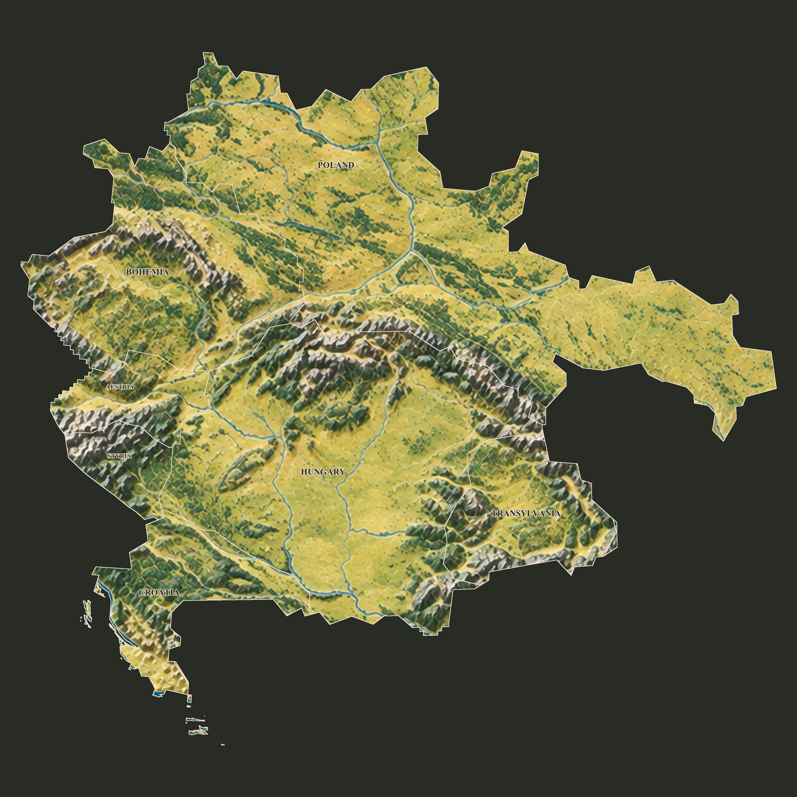

Atlas · researched map layers
Seven aligned transparent cutouts, exported from one geographic model. Historical outlines are generalized reconstructions, with regional uncertainty documented. This is not a claim of exact surveyed borders.

Separate country layers
Stack the full-canvas PNGs at (0,0). Cropped PNGs use the same scale and the offsets below.
Artwork produced with the built-in image generation tool, using a projected Natural Earth relief reference. Reusable country images contain no embedded labels or UI.